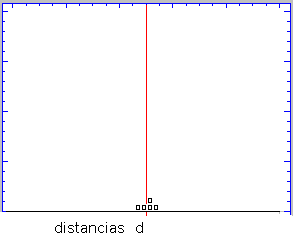
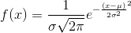
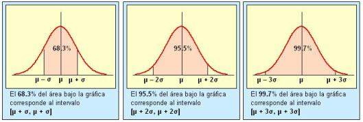
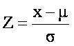

Definición
Distribución normal o gaussiana. Función de densidad de probabilidad para la variable aleatoria continua. Fue descubierta por Carl Gauss al estudiar el comportamiento de los procesos aleatorios. Es ampliamente utilizada en estadística y teoría de las probabilidades.
[1]
La función asociada a la distribución normal está dada por:

Donde:
μ: media de la distribución.
σ: desviación estándar de la distribución.
π = 3.1415926535…
x: variable aleatoria.
A una distribución normal de media μ y desviación estándar σ se le denota N(μ,σ).
La distribución normal cuando μ = 0 y σ = 1 recibe el nombre de curva normal unitaria (N(0,1))
Representacion grafica
La representación gráfica de esta distribución es una curva simétrica y su forma se asemeja a una campana por loq ue se comoce como campana de Gauss.

[2]
Propiedades de la distribucion normal
- La forma de la curva de la distribución depende de sus dos parámetros: la media y la desviación estándar.
- La media indica la posición de la campana, la gráfica se desplaza a lo largo del eje x.
- A mayor desviación la curva será más "plana", dado que la distribución, en este caso, presenta una mayor variabilidad.
- La curva es siimétrica respecto a la media
Intervalos de una distribución normal
Por su importancia en el análisis estadístico son de interés los intervalos donde el área bajo la curva corresponde a determinados valores de probabilidad.
[3]
Tipificacion de una variable
Es posible expresar cualquier distribución normal como una de la forma unitaria (N(0,1)), la cual se denomina distribución normal tipificada. Para ello se utiliza la expresión:
Una de las ventajas de tipificar una distribución es que se puede medir la desviación de los datos respecto a la media, lo cual permite comparar la posición relativa de los datos.
La distribución tipificada se aplica en estadística inferencial para determinar intervalos de confianza para la media de una población, usualmente se utiliza un nivel de confianza del 95% para el cual Z = 1.96.